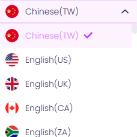

AI 文本轉語音
Vidnoz AI 提供文本轉語音功能，利用AI生成自然流暢的語音，讓文字變成可朗讀的音訊。
以下是 Vidnoz AI 文本轉語音的基本流程：
使用步驟
步驟 2：選擇語言、聲音、風格和速度
Vidnoz AI 提供多種語音選項，包含：不同語言、口音、情感風格和說話速度。


步驟 3： AI 生成語音
系統會根據設定，自動將文字轉換為自然朗讀的音訊。

步驟 4：下載與應用
生成的語音可下載為 MP3、WAV 等格式，適用於影片旁白、廣播、語音導航、有聲書、教育課程等場景。

成品
Vidnoz AI 的 TTS 功能可讓內容創作者快速製作專業級語音，提升工作效率！